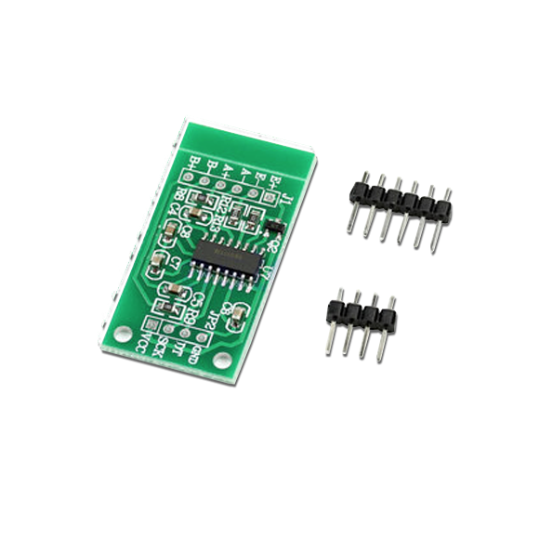

Monitoramento e segurança para uma demonstração conectada
O SafeGas é um protótipo acadêmico de robótica que demonstra monitoramento de gás, acompanhamento de massa, alertas e controle experimental de uma válvula pneumática.

Confira como funciona nosso produto
Dois módulos físicos trabalham em conjunto: o ESP32 da cozinha acompanha o MQ-2 e sinaliza o alerta; o ESP32 central recebe esses dados, lê a balança, controla a válvula e publica a telemetria.
Módulo da cozinha
O ESP32 #2 lê o MQ-2, aciona o buzzer e envia o estado do vazamento ao ESP32 #1 por ESP-NOW.
Módulo central
O ESP32 #1 recebe o alerta, lê a célula pelo HX711, comanda o relé da FA0520E e envia telemetria por MQTT.
Balança experimental
A célula de carga de 20 kg mede a massa total sobre a plataforma. Após tara e calibração, o sistema pode estimar o conteúdo de forma didática.
Arquitetura do protótipo
O SafeGas é experimental e não é um equipamento pronto para instalação residencial ou para uso com GLP real.
1. ESP32 #2 — cozinha
MQ-2, buzzer, indicadores quando instalados e fonte de 5 V. O módulo não se comunica diretamente com o backend.
2. ESP32 #1 — central
HX711, célula de carga, relé, FA0520E, bomba de ar, conversor LM2596 e fontes separadas de 12 V e 5 V.
3. Backend e painel
O ESP32 #1 publica MQTT no Mosquitto; o backend Node.js/TypeScript persiste os dados e atualiza o painel por Socket.IO.
Componentes do protótipo
A montagem usa componentes de prototipagem. As imagens e descrições abaixo identificam a função de cada conjunto; não representam um kit certificado ou pronto para venda.

ESP32 DevKit V1 — central
Recebe o ESP-NOW, processa a balança, controla o relé e comunica-se com o backend por Wi-Fi/MQTT.
Módulo principal do protótipo

ESP32 DevKit V1 — cozinha
Faz a leitura do MQ-2, controla o buzzer e envia as amostras ao ESP32 central por ESP-NOW.
Módulo de monitoramento local

Sensor MQ-2
Sensor analógico usado para demonstrar a detecção de gases; seus limites dependem de calibração e do ambiente.
Sensor de demonstração

Célula de carga de 20 kg
Mede a massa aplicada à plataforma; não foi usada com um botijão P13 real nos testes descritos.
Elemento sensor da balança

Módulo HX711
Converte o sinal elétrico da célula de carga em dados digitais para o ESP32 central.
Conversor e amplificador

Buzzer e indicadores
Sinalização local do módulo da cozinha. A intensidade é ajustada conforme o sinal, dentro das capacidades do buzzer.
Alerta local

Módulo relé de 5 V
Interface de acionamento usada pelo ESP32 central para controlar a bobina da válvula.
Acionamento elétrico

FA0520E pneumática de 12 V
Válvula de três vias usada exclusivamente na demonstração com ar atmosférico.
Atuador experimental

Mini bomba de ar de 12 V
Produz o fluxo de ar que permite observar a atuação pneumática da FA0520E.
Circuito somente com ar

Fontes e conversor LM2596
Fonte de 12 V para atuadores e fonte independente de 5 V para o ESP32, com conversão conforme a montagem.
Alimentação do protótipo
.svg)
Estrutura, fios e conectores
Protoboard, jumpers, conectores e suporte mecânico usados para montar e organizar a demonstração.
Montagem experimental
AVISO DE ESCOPO
Protótipo acadêmico
Componentes de demonstração · sem GLP real · não destinado à instalação residencial
Central Inteligente de Segurança para Gás
-
Monitoramento por MQ-2
-
Alertas locais por buzzer
-
Peso acompanhado por HX711
-
ESP-NOW entre os módulos
-
Controle experimental da válvula
-
Telemetria MQTT pelo ESP32 central
-
Painel web com histórico e alertas